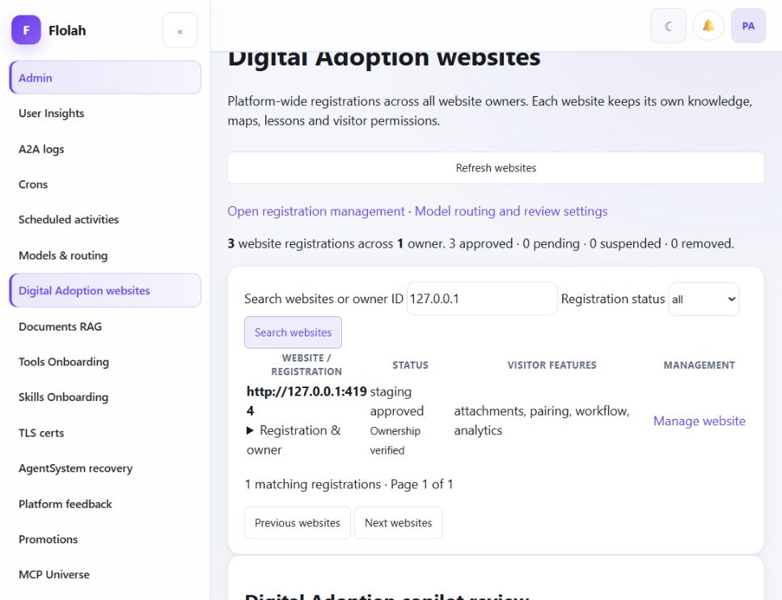
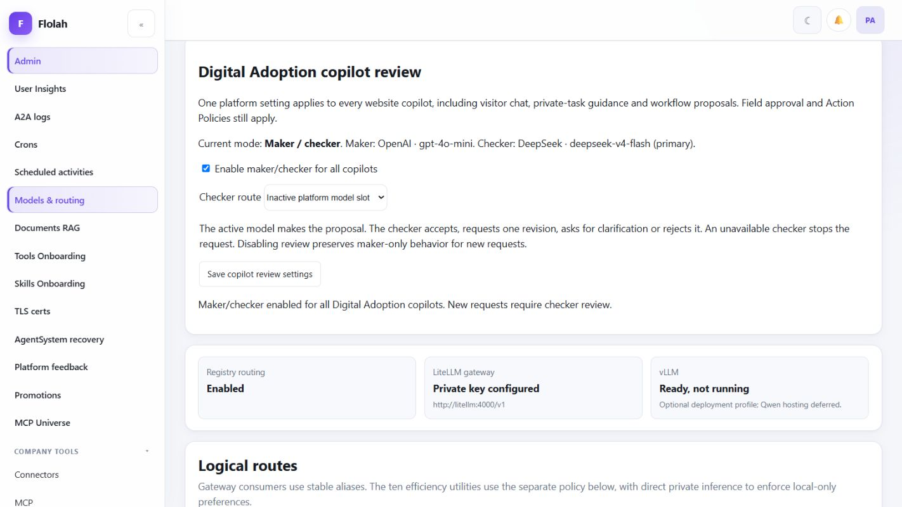
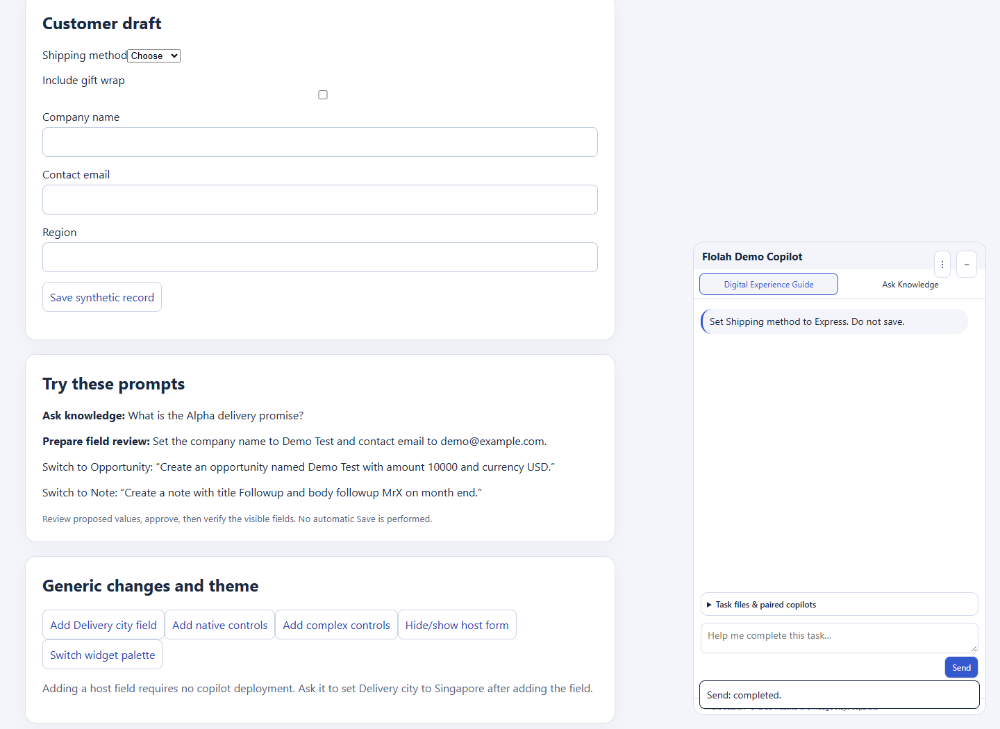

Combined incremental workflow/intent closure and admin maker-checker UAT. Historical passes retain their own release attribution. This is not full Phase 1/2 certification.
39 passed · 1 partial · 1 failed testcase. All 257 service regressions pass locally and in the VPS image.
Admin → Digital Adoption websites is restored. Global review is available and restored to Off after testing. Seven checked live prompts passed; the optional local 8B checker did not return a verdict before its deadline.
The local Ollama reasoning acceptance test failed at the 38-second deadline; use the inactive platform checker. Broad arbitrary-website parity remains partial. Earlier Safari/iOS, Android, screen-reader, sustained-load/HA and fresh-onboarding coverage gaps remain outside this incremental closure.
Structured report · CSV table · Sanitized checker evidence · Live admin observations · Prior workflow closure
| Case | Status | Observed evidence | Recommendation | Release / screenshots |
|---|---|---|---|---|
| I01_DEFAULT_ALL_TRANSPORT Keep the transport default All transport. Do not submit. | passed | transport: All transports Review before filling. Some websites autosave fields. This does not click Save. Approve field changesReject changes Global maker/checker was enabled for this live test. | Retain this generic observed-control regression; expand independent language and ambiguity evaluations. | 20261018-maker-checker-a / platform maker-checker-a Screenshot |
| I02_MISSPELLED_FIELD Set tranpsort to sse. Do not submit. | passed | transport: sse Review before filling. Some websites autosave fields. This does not click Save. Approve field changesReject changes Global maker/checker was enabled for this live test. | Retain this generic observed-control regression; expand independent language and ambiguity evaluations. | 20261018-maker-checker-a / platform maker-checker-a Screenshot |
| I03_NATIVE_MIXED_INTENT Set Shipping method to expres and select Include gift wrap. Do not save. | passed | Shipping method: Express Include gift wrap: Selected Review before filling. Some websites autosave fields. This does not click Save. Approve field changesReject changes Global maker/checker was enabled for this live test. | Retain this generic observed-control regression; expand independent language and ambiguity evaluations. | 20261018-maker-checker-a / platform maker-checker-a Screenshot Screenshot |
| I04_RECOMMEND_WITHOUT_FILL Recommend which transport to use for browsing all integrations. Do not change anything. | passed | Recommend which transport to use for browsing all integrations. Do not change anything. For browsing all integrations, I recommend using the 'All transports' option. This choice allows you to access all available transport methods, which is beneficial for comprehensive browsing.↩ Global maker/checker was enabled for this live test. | Retain this generic observed-control regression; expand independent language and ambiguity evaluations. | 20261018-maker-checker-a / platform maker-checker-a Screenshot |
| I05_UNKNOWN_CHOICE_CLARIFICATION Set Shipping method to Teleportation. Do not save. | passed | Set Shipping method to Teleportation. Do not save. The requested shipping method 'Teleportation' is not available in the observed choices. The available options are 'Choose', 'Standard', and 'Express'. Please select one of these options or clarify your request.↩ Global maker/checker was enabled for this live test. | Retain this generic observed-control regression; expand independent language and ambiguity evaluations. | 20261018-maker-checker-a / platform maker-checker-a Screenshot |
| I06_COMPARATIVE_INFERENCE Set Shipping method to the fastest available delivery. Do not save. | passed | Shipping method: Express Review before filling. Some websites autosave fields. This does not click Save. Approve field changesReject changes Global maker/checker was enabled for this live test. | Retain this generic observed-control regression; expand independent language and ambiguity evaluations. | 20261018-maker-checker-a / platform maker-checker-a Screenshot |
| I07_RADIO_SEMANTIC_INFERENCE Set Delivery preference so I collect the order myself at the shop. Do not save. | passed | Delivery preference: Store pickup Review before filling. Some websites autosave fields. This does not click Save. Approve field changesReject changes Global maker/checker was enabled for this live test. | Retain this generic observed-control regression; expand independent language and ambiguity evaluations. | 20261018-maker-checker-a / platform maker-checker-a Screenshot |
| F03_NATIVE_SELECT_CHECKBOX_RADIO_MULTISELECT_DATALIST F03 NATIVE SELECT CHECKBOX RADIO MULTISELECT DATALIST | passed | Real Chrome DOM adapter/framework integration. These checks do not claim LLM end-to-end coverage. | Retain the native, async picklist, editable table and real framework regressions. | Working source, 18 October 2026 Screenshot |
| F05_ASYNC_PICKLIST_AND_DEPENDENT_CONTROL F05 ASYNC PICKLIST AND DEPENDENT CONTROL | passed | Real Chrome DOM adapter/framework integration. These checks do not claim LLM end-to-end coverage. | Retain the native, async picklist, editable table and real framework regressions. | Working source, 18 October 2026 |
| F05_PICKLIST_LOADING_EMPTY_ERROR_AMBIGUITY_AND_RECOVERY F05 PICKLIST LOADING EMPTY ERROR AMBIGUITY AND RECOVERY | passed | Real Chrome DOM adapter/framework integration. These checks do not claim LLM end-to-end coverage. | Retain the native, async picklist, editable table and real framework regressions. | Working source, 18 October 2026 |
| F05_EDITABLE_TABLE_ROW_FILTER_SORT_PAGINATION_DYNAMIC_ROW F05 EDITABLE TABLE ROW FILTER SORT PAGINATION DYNAMIC ROW | passed | Real Chrome DOM adapter/framework integration. These checks do not claim LLM end-to-end coverage. | Retain the native, async picklist, editable table and real framework regressions. | Working source, 18 October 2026 |
| F05_MODAL_SCOPE F05 MODAL SCOPE | passed | Real Chrome DOM adapter/framework integration. These checks do not claim LLM end-to-end coverage. | Retain the native, async picklist, editable table and real framework regressions. | Working source, 18 October 2026 |
| F05_TABLE_MODEL_AND_MULTISELECT_INDEPENDENT_READBACK F05 TABLE MODEL AND MULTISELECT INDEPENDENT READBACK | passed | Real Chrome DOM adapter/framework integration. These checks do not claim LLM end-to-end coverage. | Retain the native, async picklist, editable table and real framework regressions. | Working source, 18 October 2026 |
| F03_STALE_REVIEW_REJECTS_CHANGED_OPTIONS F03 STALE REVIEW REJECTS CHANGED OPTIONS | passed | Real Chrome DOM adapter/framework integration. These checks do not claim LLM end-to-end coverage. | Retain the native, async picklist, editable table and real framework regressions. | Working source, 18 October 2026 |
| F02_F07_GENERIC_BUSY_DUPLICATE_GUARD_AND_NOTICE F02 F07 GENERIC BUSY DUPLICATE GUARD AND NOTICE | passed | Real Chrome DOM adapter/framework integration. These checks do not claim LLM end-to-end coverage. | Retain the native, async picklist, editable table and real framework regressions. | Working source, 18 October 2026 Screenshot Screenshot |
| F03_REACT_APPLICATION_STATE_AND_INDEPENDENT_SAVE F03 REACT APPLICATION STATE AND INDEPENDENT SAVE | passed | Real Chrome DOM adapter/framework integration. These checks do not claim LLM end-to-end coverage. | Retain the native, async picklist, editable table and real framework regressions. | Working source, 18 October 2026 Screenshot |
| F03_ANGULAR_APPLICATION_STATE_AND_INDEPENDENT_SAVE F03 ANGULAR APPLICATION STATE AND INDEPENDENT SAVE | passed | Real Chrome DOM adapter/framework integration. These checks do not claim LLM end-to-end coverage. | Retain the native, async picklist, editable table and real framework regressions. | Working source, 18 October 2026 Screenshot |
| I06 Task-scoped choice privacy | passed | Browser canary: automatic and unrelated task snapshots exclude choice labels; current entered field values are excluded. Relevant requested native choices are available. | Keep labels scoped to the requested task and preserve the 20/control, 60/overall limits. | 20261018-agentic-e |
| P01 Exact owner-bound Save classification | passed | Policy regression passes locally and in candidate platform image. Live read-only policy evaluation reports R1/write_internal/autonomous. Explicit stricter company overrides remain effective; unbound submit stays R3. | Do not infer a successful business Save from policy acceptance alone. | 20261018-agentic-b |
| W01 Owner self-service native Save setup | passed | Owner console saved exact Customer, Note and Opportunity bindings for loopback website only. No public domain bindings were changed. | Keep IDs, route, visible control label and effect family reviewed for each host. | 20261018-agentic-e Screenshot |
| W02 Reusable saved workflow group | passed | The same saved local workflow group was reused across runs 4064, 4065 and 4066. The published manual-only 10-node definition retained its group ID while replacement panels explicitly linked to it. | Future user panels must explicitly link to this existing group; offline panels receive no commands. | 20261018-agentic-h / platform agentic-b Screenshot Screenshot |
| W03 Workflow Customer → Note → Opportunity saved end to end | passed | Run 4066 completed all 10 nodes. The workflow alone filled and saved Customer, Note and Opportunity. Three HTTP 200 host POSTs matched three exact records independently read from the host records page. No observer host fill, Save click or direct record write. | Retain the full UI journey and exact independent readback. This proves these three synthetic records, not arbitrary business-system success. | 20261018-agentic-h / platform agentic-b Screenshot Screenshot Screenshot Screenshot |
| W04 Live Save execution after classification correction | passed | All three native Save nodes executed through exact owner-reviewed local bindings under the internal-write policy. The preceding fill steps used the explicitly approved, workflow-specific three-use temporary grant. No visitor review-button click was performed. | Keep visitor review and autonomous workflow authority distinct. A binding is not a general permission to save; each effect still requires policy authorization. | 20261018-agentic-h / platform agentic-b Screenshot Screenshot Screenshot |
| P02 Temporary UAT grant cleanup | passed | Run 4066 consumed all three approved fill uses. The exact temporary workflow override was removed afterward. Independent readback confirms zero overrides for this workflow; company internal writes remain autonomous, external messages require approval, and destructive actions remain prohibited. | Future runs must satisfy current policy again; this UAT grant is no longer available. | 20261018-agentic-j / platform agentic-b Screenshot |
| SAVE_CUSTOMER Independent persisted customer record | passed | Host DOM readback ID b0d6c899-7b4f-4170-985e-aecd54d4b662. Exact expected values: {"company_name": "Workflow Orchid 20261018-170100", "contact_email": "workflow.uat@example.test", "region": "Singapore"}. Matches the captured request and HTTP 200 response. | Keep independent persisted readback separate from command completion and fill readback. | Saved on agentic-h; read-only evidence recaptured on agentic-j Screenshot |
| SAVE_NOTE Independent persisted note record | passed | Host DOM readback ID 03697250-f11a-4499-ba13-03561c4ff97d. Exact expected values: {"title": "Followup for Workflow Orchid 20261018-170100", "body": "Follow up on the demonstration opportunity for Workflow Orchid 20261018-170100"}. Matches the captured request and HTTP 200 response. | Keep independent persisted readback separate from command completion and fill readback. | Saved on agentic-h; read-only evidence recaptured on agentic-j Screenshot |
| SAVE_OPPORTUNITY Independent persisted opportunity record | passed | Host DOM readback ID 31eac2ae-484b-470d-a76f-87be09a37163. Exact expected values: {"opportunity_name": "Growth for Workflow Orchid 20261018-170100", "amount": "12500", "currency": "USD"}. Matches the captured request and HTTP 200 response. | Keep independent persisted readback separate from command completion and fill readback. | Saved on agentic-h; read-only evidence recaptured on agentic-j Screenshot |
| NAV01 Field contents do not become navigation intent | passed | A Note body mentioning opportunity stays on the Note form. The source regression and real run 4066 both pass; an explicitly named navigation destination still takes precedence. | Retain navigation-versus-field-data regression; broaden paraphrases without website-specific rules. | 20261018-agentic-h Screenshot |
| PRIVATE01 Private effect bookkeeping excluded from workflow outputs | passed | The status serializer now whitelists recipient status and opaque result handles. A canary verifies exclusion before/after execution and after task end. The real isolated platform-runner regression checks stored output_json excludes private effect values. | Historical run 4066 used synthetic values on agentic-h; its stored audit is not retroactively redacted. New status protection is verified on agentic-j. | 20261018-agentic-j / isolated runner regression |
| G01 Broad generic intelligent UI-agent coverage | partial | Seven representative live intent cases now pass with global maker/checker enabled. Ten DOM/framework checks and the earlier three-form saved workflow also pass. This does not establish unrestricted browser-agent parity on arbitrary websites. | Expand independent ambiguity, recovery, browser/device and latency evaluations before broadening autonomy. Model agreement never replaces authorization or persisted host readback. | 20261018-agentic-j |
| MC01 Global admin enable/disable and persistent default | passed | The real Admin UI enables review for all website copilots, retains it after reload, and restores maker-only when disabled. Maker-only persisted through the later service B/platform C deployment. Isolated real API tests reject anonymous/CEO writes, malformed settings and secret/model overrides. | Keep the default Off until an administrator intentionally enables the selected available checker. Existing visitor approvals and Action Policies remain mandatory. | 20261018-maker-checker-a; final service B / platform C Screenshot Screenshot Screenshot Screenshot |
| MC02 Independent maker/checker roles and live website coverage | passed | All seven visitor intent cases pass on public flolah.cloud and the loopback fixture while review is enabled. Gateway metadata confirms active secondary as maker and inactive primary as checker. Slot-swap regression verifies the reverse configuration. | Use the inactive platform-slot checker on this deployment. Seven sequential samples are not a concurrent capacity benchmark. | 20261018-maker-checker-a; final service B / platform C Screenshot Screenshot |
| MC03 One bounded revision and final recheck | passed | Two of the seven real model operations requested one maker revision and then accepted the corrected proposal. Regression coverage also proves repeated disagreement stops after one revision with no actions. | Retain the bounded revision and final deterministic contract checks; do not infer host completion from a judge verdict. | 20261018-maker-checker-a; final service B / platform C |
| MC04 Clarification, rejection and checker failure stop changes | passed | Checker clarify/reject returns no actions. Missing or malformed checker responses fail closed. The real local-checker timeout surfaced COPILOT_CHECKER_UNAVAILABLE, left the field unchanged and made zero host submissions. | Keep explicit no-change errors. No unreviewed maker fallback is allowed while global review is enabled. | 20261018-maker-checker-a; final service B / platform C Screenshot |
| MC05 Shortcut coverage and visitor override denial | passed | Explicit field and navigation proposals consult the current gateway policy instead of bypassing review. Disabled shortcuts require no model inference. Gateway tests reject visitor-supplied model/review overrides and invalid live choices. | Preserve the server-side policy boundary and current control revalidation. | 20261018-maker-checker-a; final service B / platform C |
| MC06 Knowledge/private-task answer review contract | passed | Gateway integration verifies knowledge responses require the checker and rejected claims become insufficient without citations. Private task summaries use this same knowledge adapter; existing task-grounding and deletion regressions remain in the full suite. This row is contract coverage, not a new live OCR scenario. | Retain website/task-scoped evidence and citation verification; extend live attachment benchmarks independently. | 20261018-maker-checker-a; final service B / platform C |
| MC07 Local Ollama reasoning returns an accepted live verdict | failed | With the registered deepseek-r1:8b checker selected through Admin, an explicit synthetic Express proposal returned HTTP 503 after 38,163 ms. No accepted verdict was obtained. The field stayed unchanged and host writes were zero. The raw route record describes partial route coverage; this acceptance criterion failed. | Use the verified inactive-slot checker for now. Evaluate local-model latency/capacity or a suitable registered reasoning model before enabling the local route for visitors. | 20261018-maker-checker-a; final service B / platform C Screenshot Screenshot |
| MC08 Local reasoning transport and admission bounds | passed | The local route resolves the registered reasoning deployment, requests native JSON/thinking output, excludes reasoning traces, disallows hosted fallback and limits concurrent local checks. Transport, slot release, invalid output and global policy tests pass. | Keep the per-gateway concurrency budget aligned with the inference host; additional replicas multiply that budget. | 20261018-maker-checker-a; final service B / platform C |
| ADMIN01 Restored platform-wide Digital Adoption websites page | passed | Admin navigation now opens /admin/digital-adoption. The actual service lists all three existing registrations under their one current owner. The local fixture and both original/isolated Flolah registrations are visible. No live registrations were seeded. | Use this platform overview for cross-owner administration; website-owner sign-in remains scoped to that owner. | Service 20261018-maker-checker-b / platform maker-checker-c Screenshot Screenshot |
| ADMIN02 Cross-owner paging, search and safe inventory projection | passed | Isolated tests register 130 synthetic entries across two owners and verify paging past 100, owner/domain search, status filters and rejection of non-admin or spoofed-role access. Inventory excludes DNS challenges, credentials, action bindings and task/document data. | Retain server-side role checks and bounded pagination. Current live data contains one owner; two-owner coverage is isolated test evidence. | Service 20261018-maker-checker-b |
| ADMIN03 Selected registration management and filter usability | passed | Live UI filters find one local registration, two Flolah registrations and no pending matches. Manage website opens the authorized local registration directly with its separate embedding selected. The selected-ID path also works beyond the legacy list cap in regression. | Keep indexes and visitor controls registration-specific. Installation counts are issued credentials, not online visitor counts. | Service 20261018-maker-checker-b / platform maker-checker-c Screenshot Screenshot |


